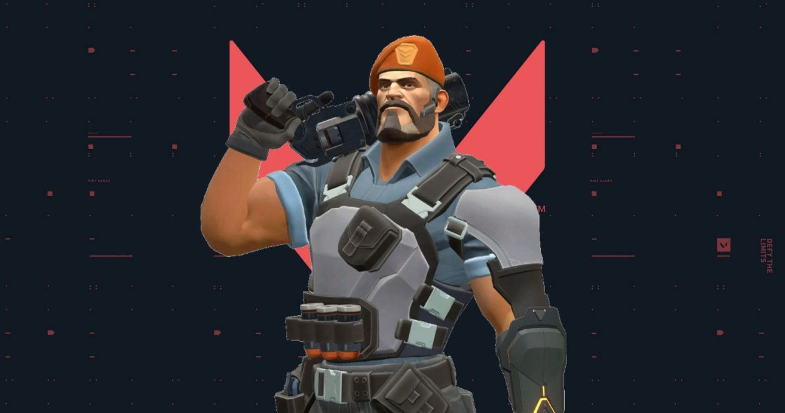

Ability 1(stim beacon)-This ability is a stim beacon as the name says,it increases the firing rate,reloading speed and gun equip time if u stay within the radius of the beacon.U see a big green circle that shows the radius.
Ability 2(incendiary)-This ability is a molotov that is launched from a grenade launcher.It shoots a pellet that releases the fire.It releases as soon as it hits a surface but can sometimes get bounced on the surface.This does a lot of damage and u can use afterplant lineups.
Ability 3(sky smoke)-This ability is a smoke which is similar to omen's but their colors are different.When u press the e key u get a part of the map on ur screen,u can press left click on the areas u want to smoke and then press right click for it to activate,it has 3 charges,each charge costs 100 creds.
Ability 4(orbital strike)-This ability is a orbital strike like laser which damages player in the area.U will get the part of the map in ur screen and u just have to press left click on the area u want to ult and then press right click to activate it.